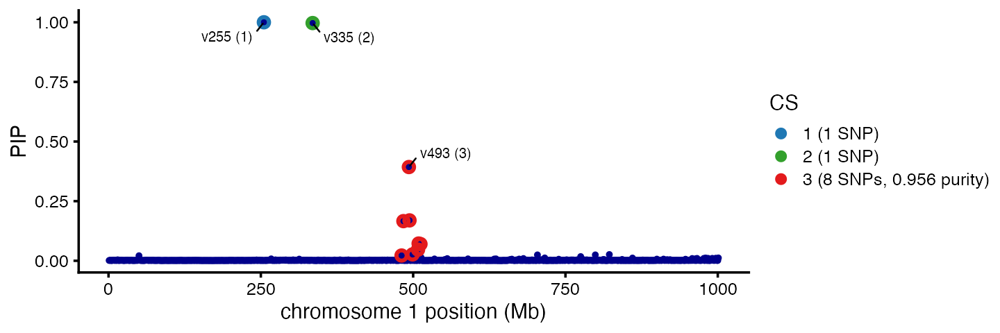
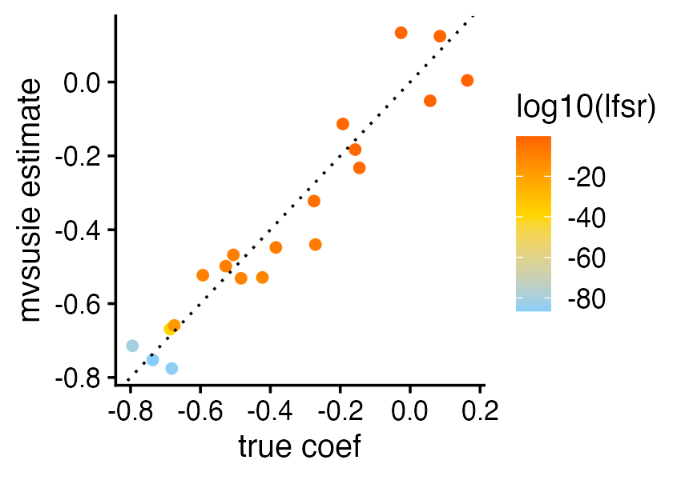
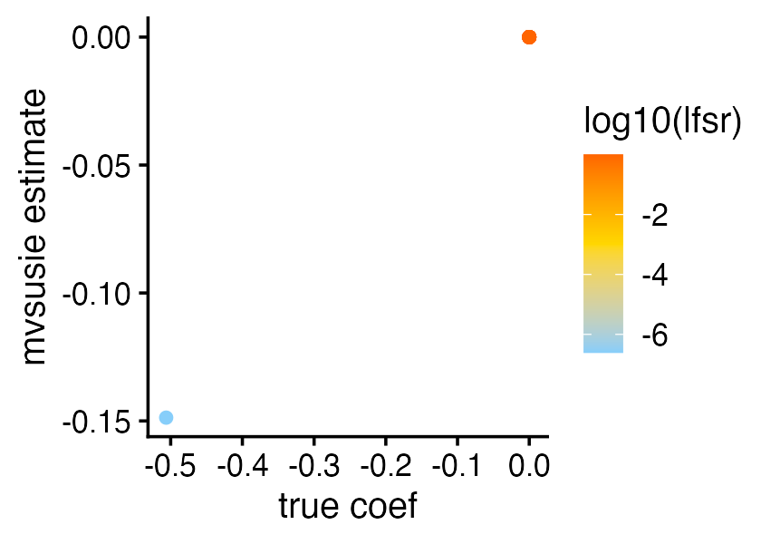
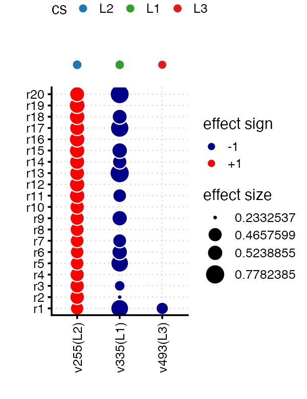
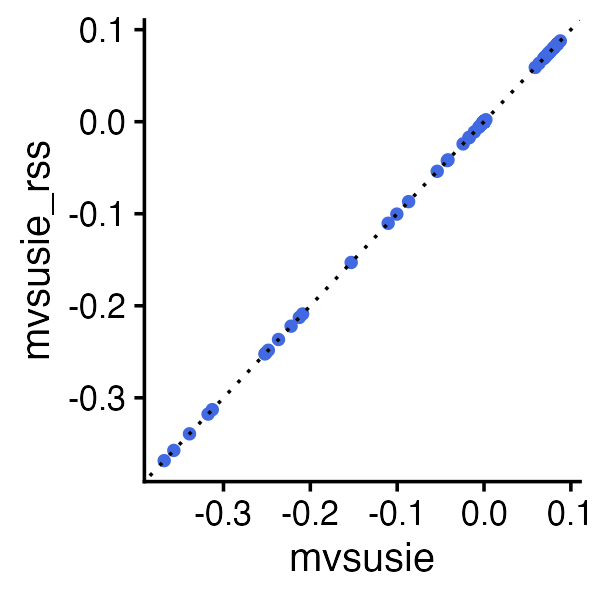
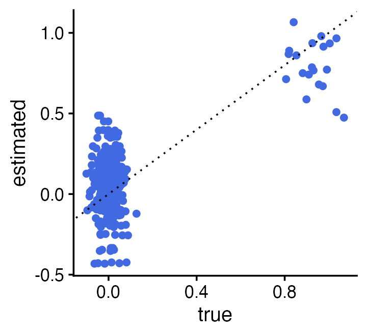

vignettes/mvsusie_intro.Rmd
mvsusie_intro.RmdThe aim of this vignette is to work through the steps of a basic mvSuSiE multi-trait fine-mapping analysis. We analyze a simulated fine-mapping data set with realistic genotypes.
First, load the necessary packages, and to ensure reproducibility set the seed.
Next, load the data set we will analyze.
data(simdata)The data consist of an \(N \times
J\) genotype matrix X and an \(N \times R\) phenotype matrix
Y where \(N\) is the
number of samples, \(J\) is the number
of SNPs, and \(R\) is the number of
traits/phenotypes.
Some care should be taken to choose the prior for your mvSuSiE analysis. To simplify the example we have defined the prior for you:
prior <- create_mixture_prior(list(matrices = simdata$par$U,
weights = simdata$par$w),
null_weight = 0)More generally, we recommend taking a “data-driven” approach to estimating the weights and the covariance matrices in the prior. For example, when there are many candidate fine-mapping regions in your study, you could fit the prior to all the top associations from each of the candidate fine-mapping regions. This data-driven approach is quite similar to the approach used in mashr, and we recommend looking through the vignettes in the mashr package for further guidance.
Now that we have set up the prior, we are ready to run mvsusie:
fit <- mvsusie(X,Y,standardize = TRUE,
prior_variance = prior,
residual_variance = simdata$par$V,
estimate_prior_variance = TRUE,
tol = 0.01)
# Initializing data object...
# Dimension of X matrix: 574 1001
# Dimension of Y matrix: 574 20
# Initializing prior object ...
# Number of components in the mixture prior: 20
# Memory used by data object 0.011 GB
# Memory used by prior object 0 GB
# Running IBSS algorithm...
# Iteration 1 delta = Inf
# Iteration 2 delta = 31.0117608064538
# Iteration 3 delta = 1.45487855527062
# Iteration 4 delta = 0.676754236554189
# Iteration 5 delta = 0.43271464830832
# Iteration 6 delta = 0.308027641538501
# Iteration 7 delta = 0.234364249556165
# Iteration 8 delta = 0.18638943089536
# Iteration 9 delta = 0.152773426967542
# Iteration 10 delta = 0.127958230748845
# Iteration 11 delta = 0.190949569805525
# Iteration 12 delta = 0.438205737898897
# Iteration 13 delta = 0.0164586528208019
# Iteration 14 delta = 0.0155586413329729
# Iteration 15 delta = 0.0147936737121199
# Iteration 16 delta = 0.0138843746408384
# Iteration 17 delta = 0.0126234407434822
# Iteration 18 delta = 0.0109375095908035
# Iteration 19 delta = 0.00896087709406856In this call, we have provided mvSuSiE with the four key pieces of information need to run the analysis: (1) the genotype matrix; (2) the phenotype matrix, (3) the prior on the effects; and (4) the residual variance-covariance matrix (an \(R \times R\) matrix).
The “tol” parameter tells the IBSS model fitting algorithm when to stop iterating; for a final analysis, you may want to set a more stringent tolerance (a number closer to zero).
By default, the “mvsusie” function fits a model with L = 10 single
effects. mvSuSiE is generally robust to misspecification of L so long as
L is chosen to be larger than the true number of effects. mvSuSiE prunes
unneeded single effects by estimating a scaling coefficient in the
prior; we set estimate_prior_variance = TRUE to turn on
this pruning step. Indeed, mvsusie pruned 7 out of 10 of the single
effects, resulting in three 95% credible sets (CSs), each of which
contain exactly one of the true causal SNPs:
fit$sets$cs
# $L1
# [1] 335
#
# $L2
# [1] 255
#
# $L3
# [1] 481 484 493 494 499 508 509 512In the third CS, mvSuSiE cannot decide which SNP is the causal SNP because the candidate SNPs are strongly correlated with each other:
fit$sets$purity
# min.abs.corr mean.abs.corr median.abs.corr
# L1 1.0000000 1.0000000 1.0000000
# L2 1.0000000 1.0000000 1.0000000
# L3 0.9559005 0.9803777 0.9801855Examining the posterior inclusion probabilties (PIPs) for these SNPs, there is a subset of 3 SNPs that account for >58% of probability for being causal:
markers <- fit$sets$cs$L3
fit$pip[markers]
# v481 v484 v493 v494 v499 v508 v509
# 0.02205462 0.16625677 0.39305212 0.16937313 0.02670885 0.04688452 0.07230198
# v512
# 0.07009722Additionally, the “sentinel” SNP—the SNP with the highest PIP—as a PIP of nearly 40%.
This is all summarized visually in a “PIP plot”:
mvsusie_plot_simple(fit)$pip_plot
In a multi-trait analysis, we are not just interested in identifying the causal SNPs, but also which traits are affected by these causal SNPs.
Let’s take the first CS as an example. This is an example of a causal SNP that affects most traits:
l <- 1
i <- 335
pdat <- data.frame(bhat = simdata$Btrue[i,],
coef = fit$b1_rescaled[l,i+1,],
lfsr = fit$single_effect_lfsr[l,])
ggplot(pdat,aes(x = bhat,y = coef,color = log10(lfsr),pch = 20)) +
geom_point(shape = 20,size = 2.5) +
geom_abline(intercept = 0,slope = 1,color = "black",linetype = "dotted") +
scale_color_gradient2(low = "lightskyblue",mid = "gold",high = "orangered",
midpoint = -40) +
labs(x = "true coef",y = "mvsusie estimate") +
theme_cowplot(font_size = 12)
Indeed, the effects of this causal SNP are significant—i.e., small local false sign rates—for most of the 20 traits. (A local false sign rate can be thought of as an alternative to a p-value, but is typically slightly more conservative than a p-value.)
Also, it is reassuring that the mvsusie estimates of the coefficients align well with the coefficients used to simulate the data.
By contrast, the causal SNP identified by the third CS only affects one trait, and the affected trait was correctly identified by mvsusie:
l <- 3
i <- 493
pdat <- data.frame(bhat = simdata$Btrue[i,],
coef = fit$b1_rescaled[l,i+1,],
lfsr = fit$single_effect_lfsr[l,])
ggplot(pdat,aes(x = bhat,y = coef,color = log10(lfsr),pch = 20)) +
geom_point(shape = 20,size = 2.5) +
scale_color_gradient2(low = "lightskyblue",mid = "gold",high = "orangered",
midpoint = -3) +
labs(x = "true coef",y = "mvsusie estimate") +
theme_cowplot(font_size = 12)
Notice that the lfsr is very small for the first trait (<1e-6) whereas the lfsrs for the rest of the traits are all close to 1.
The information about which traits are affected by the causal SNP is summarized in the “effect plot”:
out <- mvsusie_plot_simple(fit)
out$effect_plot
mvsusieR also provides a “summary data” interface, building on the ideas developed in the susie-rss paper. Different combinations of summary statistics are accepted, but here we will focus on the most common case in which the z-scores from the association tests are used. These z-scores should be stored in a \(J \times R\) matrix:
Z <- simdata$sumstats$z
dim(Z)
# [1] 1001 20In addition to the z-scores, the sample size and \(R \times R\) LD (correlation) matrix are needed. (Strictly speaking, the sample size is not required, but the estimates may be less accurate if the sample size is not provided.)
n <- simdata$sumstats$n
R <- simdata$sumstats$LDNow we can fit an mvSuSiE model to these summary data via the
mvsusie_rss interface:
fit_rss <- mvsusie_rss(Z,R,n,
prior_variance = prior,
residual_variance = simdata$par$V,
estimate_prior_variance = TRUE,
tol = 0.01)
# Initializing prior object ...
# Number of components in the mixture prior: 20
# Memory used by data object 0.014 GB
# Memory used by prior object 0 GB
# Running IBSS algorithm...
# Iteration 1 delta = Inf
# Iteration 2 delta = 31.0117608064538
# Iteration 3 delta = 1.45487855527244
# Iteration 4 delta = 0.67675423655237
# Iteration 5 delta = 0.432714648310139
# Iteration 6 delta = 0.308027641538501
# Iteration 7 delta = 0.234364249556165
# Iteration 8 delta = 0.186389430897179
# Iteration 9 delta = 0.152773426965723
# Iteration 10 delta = 0.127958230750664
# Iteration 11 delta = 0.190949569801887
# Iteration 12 delta = 0.438205737900716
# Iteration 13 delta = 0.0164586528226209
# Iteration 14 delta = 0.0155586413311539
# Iteration 15 delta = 0.0147936737121199
# Iteration 16 delta = 0.0138843746390194
# Iteration 17 delta = 0.0126234407434822
# Iteration 18 delta = 0.0109375095944415
# Iteration 19 delta = 0.00896087709406856The call to mvsusie_rss is very similar to the call to
mvsusie above, except that the individual-level data are
replaced with summary data.
When the genotypes are standardized in mvsusie
(standardize = TRUE) and the LD estimates are obtained from
the same data that were used to compute the z-scores, both
mvsusie and mvsusie_rss should give the same
result:
pdat <- data.frame(b1 = as.vector(fit$b1),
b1_rss = as.vector(fit_rss$b1))
ggplot(pdat,aes(x = b1,y = b1_rss)) +
geom_point(shape = 20,size = 2,color = "royalblue") +
geom_abline(intercept = 0,slope = 1,color = "black",linetype = "dotted") +
labs(x = "mvsusie",y = "mvsusie_rss") +
theme_cowplot(font_size = 12)
Of course, the result is not always expected to be the same—for example, when the LD is estimated from an external reference panel.
In the above examples, we set the residual variance to the value that was used to simulated the data. In practice of course we will not have access to this so we will have to estimate the residual variance somehow.
When one has access to the summary data (specifically, the z-scores) for a large pool of SNPs that are expected to have little to no effect on the traits, one can use these z-scores to estimate the residual variance. Here, in this example data set, we do not have access to a large pool of “null SNPs”, but we can still use the data we have available to obtain a rough estimate of the residual variance. Specifically, we take as the “null SNPs” the SNPs in which the z-scores are all less than 2 in magnitude:
Z <- simdata$sumstats$z
null_markers <- which(apply(abs(Z),1,max) < 2)
length(null_markers)
Z <- Z[null_markers,]
Vest <- cov(Z)
# [1] 291The estimate of the residual covariance matrix using these SNPs is reasonable, although presumably one could do better if we had the z-scores for more SNPs that were not in LD with the causal SNPs:
pdat <- data.frame(true = as.vector(simdata$par$V) + rnorm(400)/30,
estimated = as.vector(Vest))
ggplot(pdat,aes(x = true,y = estimated)) +
geom_point(shape = 20,size = 2.5,color = "royalblue") +
geom_abline(intercept = 0,slope = 1,color = "black",linetype = "dotted") +
theme_cowplot(font_size = 12)